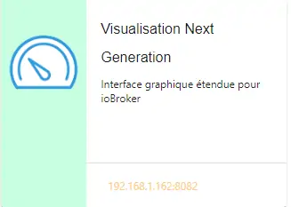
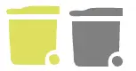

1. Configuration minimum : la page d’accueil
Permet d’afficher
La température extérieure,
Le jour (changement à 0H pour une tablette connectée en permanence),
La sortie des poubelles,
La gestion de la fosse septique,
La surveillance de la pression de la chaudière
Les anniversaires
Rappel pour la prise de médicaments
La prévision de pluie à 1 heure de Météo France
L’arrivée du courrier
La mise en service de l’alarme de nuit
Le remplacement des piles pour les capteurs concernés
Les dispositifs off line
etc ….
1.1 – Configuration :/admin.config.php
Il faut fournir un minimum de renseignements :
1.1.1 -Adresse IP , domaine, favicon de monitor
//general monitor
-->define('URLMONITOR', '');//domaine (pour accès distant) et port si différent de 443
-->define('IPMONITOR', '192.168.1.9');//ip
define('PASSMONITOR', '*******');//mot passe serveur et SSH2
define('USERMONITOR', 'michel');//user serveur et SSH2 ;le répertoire perso sera /home/nom de USERMONITOR
define('MONCONFIG', 'admin/config.php');//fichier config
define('DZCONFIG', 'admin/dz/temp.lua');//fichier temp
-->define('FAVICON', '/favicon.ico');//fichier favicon , icone du domaine dans barre url
define('DISPOSITIFS', 'dispositifs');
Note
- define(“DISPOSITIFS”, “dispositifs”);
Pour faciliter la réinitialisation des dispositifs dans Domoticz ou un transfert (ex, zwavejs2mqtt , zigbee2mqtt sous docker) ;
en créant une copie de la table dispositifs (« dispositifs » par défaut), il est possible de préparer le transfert ; ici la table dispositifs a été renommée Dispositifs
1.1.1.a Pour l’image de fond suivant la résolution d’écran et le logo
// Monitor
define('IMAGEACCUEIL', 'images/maison.webp');//image page accueil pour écrans >534 px
define('IMAGEACCUEILSMALL', 'images/maison_small.webp');//image page accueil pour écrans <535 px
define('IMGLOGO', 'images/logo.png');//image logo
1.1.1.b Pour les titres, slogans et lexique
Pour le lexique :
true = lexique par défaut
false = lexique à modifier /include/lexique_no.php
define('NOMSITE', 'Domoticz');//nom principal du site
define('NOMSLOGAN', xxxxxxxxxxx);//nom secondaire ou slogan
// affichage lexique
define('LEXIQUE', true);
1.1.2 intervalles de maj
L’intervalle de mise à jour pour les services (poubelles, anniversaires,…) et les dispositifs, il peut être changé: - il est de ½ heure (1800000 milli secondes) pour les variables (services) - il est se 3Os pour les dispositifs avec un minimum de 5 secondes.
// interval de maj des fonctions JS maj_services() & maj_devices()
define('TEMPSMAJSERVICES', 1800000);//interval maj services en milli secondes
define('TEMPSMAJSERVICESAL', 180000);//interval maj services ALARME ABSENCE(si installée) en milli secondes
define('TEMPO_DEVICES', 180000);// en milli secondes, rafraichissement programmé(dispositifs non prioritaires)
define('TEMPO_DEVICES_D', 30000);// en milli secondes (>=5s, <30s) maj déclenchée par Dz ou Ha voir doc
Important
Si define(“SSE”, true) = TEMP REEL : :red:”TEMPO_DEVICES_DZ est annulé”.
un serveur SSE doit etre installé ainsi qu’un script(léger) dans DZ ou(et) HA
Note
TEMPO_DEVICES pour tous les dispositifs
TEMPO_DEVICES_D ou serveur SSE* pour les dispositifs qui doivent afficher leurs données en temps réel (voir le § suivant)
1.1.3 maj en temps réel
2 solutions :
semi temps réel , monitor interroge une variable mis à jour par Dz ou Ha lors d’un changement de valeur d’un dispositif; si la variable est à 1 monitor fait une mise à jour avec l’API des dispositifs et remet à 0 la variable.C’est la solution historique de monitor mais la solution SSE-php, incluse dans monitor est à privilégier.cette solution sera obsolète dans les prochaines versions
temps réel, en recevant de Domoticz ou Home Assistant, par un message depuis un SSE(Server-sent Events) , les données du dispositifs qui ont changées de valeur
Note
TEMPO_DEVICES_D : avec la valeur dans config.php, rafraichissement des dispositifs toutes les 30 secondes pouvant être ramenée à 5 secondes ( si par exemple un PIR, un contact de porte, qui sont déclarés prioritaires dans DZ passent à ON)
Avantage : simplicité de mise en oeuvre , création d’une variable dans DZ ou HA et ajout d’une (ou plusieurs) ligne(s) de script (DzVent ou yaml).
- InconvénientsRetard dans la mise à jour de 5 secondes minimum , si 2 écrans (2 navigateurs sont connectés) la mise à jour est effective sur un seul des écrans ; le second écran sera mis à jour lors de la mise à jour cyclique.
avec les groupes, les scènes ou automatisations ce retard du rafraichissement peut être désagréable.
Seveur SSE pour l’installation d’un serveur node.js voir ce § :ref:”21.12 Serveur SSE Node JS”
Avantages : Vrai temps réel, économise de la bande passante; un serveur SSE PHP est déjà installé dans monitor , la création d’un script pour envoyer les données depuis DZ ou HA est simple;
Inconvénients : Installation d’un serveur JS pour la version SSE NodeJS ;
Important
En https,pour des connexions distantes, il suffit de demander des certificats Let’encrypt; le serveur SSE-PHP installé dans monitor n’a pas besoin de certificat contrairement à un serveur SSE Node.JS
1.1.3.1 Solution semi temps réel
Cette solution est obsolète et sera supprimée dans les futures version.
La fonction JS :
<?php
if (MQTT==false) echo '
tempo_devices='.TEMPO_DEVICES_D.';
var idsp=1;if (tempo_devices>30000) tempo_devices=30000;
var_sp(idsp);
function var_sp(idsp){
$.getJSON( "ajax.php?app=data_var&variable=29", function(data) {
//console.log(data.var_dz);
if (data.var_dz=="1"){maj_variable(29,"variable_sp",0,2);maj_devices(plan);maj_services(0);}
if (data.message!="0"){maj_variable("msg",data.message,0,0);maj_services(0); }
});
setTimeout(var_sp, tempo_devices, idsp);
}';?>
La fonction PHP qui récupère la valeur de la variable Domoticz:
// valeur d'une variable
function val_variable($variable){
$result=array();
$L=URLDOMOTIC."json.htm?type=command¶m=getuservariable&idx=".$variable;
$json_string = file_get_curl($L);
$result = json_decode($json_string, true);
$lect_var = $result['result'][0];
$value = $lect_var['Value'];
return $value;
}
pour Home Assistant l” API monitor peut être utilisée.
1.1.3.2 Solution temps réel SSE
Le serveur SSE-NodeJS voir § 21.12 Serveur SSE Node JS
Le serveur SSE-PHP voir ce § 18.10 Serveur SSE installé dans Monitor
Note
cette solution évite pour l’accès distant la demande d’un certificat pour https
Pour SSE-node, l’IP, le port, sont à déclarer dans /admin/config.php.
Pour SSE-php , indiquer le rafraichissement en secondes.
define('SSE', false);// node ou php si serveur SSE utilisé par monitor
//pour SSE php
define('SSE_SLEEP', 2);//raffraichissement en secondes
// pour SSE node
define('SSE_USER', "michel");//user et mot passe
define('SSE_PASS', "<mot passe>");
define('SSE_URL', 'socket.<DOMAINE>.ovh');
define('SSE_IP', '192.168.1.26');//adresse IP
define('SSE_PORT', 3000);//
Note
Port mqtt: 3000
les scripts JS dans footer.php:
voir ce paragraphe concernant le serveur 18.10 Serveur SSE installé dans Monitor
if (SSE=='php') {echo " <script> window.onload = function() { // établir un flux et enregistrer les réponses sur la console var source = new EventSource('include/serveur_sse.php'); source.addEventListener('message', function(e) { document.getElementById('messages').innerHTML = e.data ; donnees=JSON.parse(e.data);var id_x=donnees.id;var state=donnees.state;console.log(id_x,state); maj_mqtt(id_x,state,0); }, false); source.addEventListener('open', function(e) { document.getElementById('status').innerText='connecté'; }, false); source.addEventListener('error', function(e) { if (e.readyState == EventSource.CLOSED) { document.getElementById('status').innerText='connexion fermée'; } }, false); }; </script>";}?>
Client SSE NodeJS:
if (SSE=='node') {echo "
<script>
const eventSource = new EventSource('http://".SSE_IP.":".SSE_PORT."/events');
eventSource.onopen = function() { document.getElementById('status').innerText='connecté';};
eventSource.onmessage = function (currentEvent) {
const listElement = document.getElementById('messages');
const newElement = document.createElement('li');
const obj = JSON.parse(currentEvent.data);
newElement.innerText = obj[0].info;
listElement.appendChild(newElement);
};
</script>";}
function maj_mqtt(id_x,state,ind,level=0){
switch (ind) {
case 0:
for (attribute in maj_dev) {
if (maj_dev[attribute]==id_x) var id_m=attribute;
}
var command=state;
pp[id_m].Data=command;
console.log(command)
var sid1=pp[id_m].ID1;;
var sid2=pp[id_m].ID2;
var scoul_on=pp[id_m].coul_ON;
var scoul_off=pp[id_m].coul_OFF;
var c_l_on=pp[id_m].coullamp_ON
var c_l_off=pp[id_m].coullamp_OFF
var scoul="";var scoull="";
if (command=="On" || command=="on") {scoul=scoul_on;scoull=c_l_on;}
else if (command.substring(0, 9)=="Set Level") {scoull=scoull=c_l_on;}
else if (command=="Off" || command=="off" ) {scoul=scoul_off;scoull=c_l_off;}
else return;
document.getElementById(sid1).style = scoul;
if (sid2) {document.getElementById(sid2).style = scoul;}
var c_lamp= pp[id_m].class_lamp ;console.log("c_lamp="+c_lamp);
if (command.substring(0, 9)=="Set Level") {var h=document.getElementById(sid1).getAttribute("h");
document.getElementById(sid1).setAttribute("height",parseInt((h*(level)/100)));
console.log("h="+h+parseInt((h*(level)/100)));}
break;
case 1:scoull=state;c_lamp=id_x;console.log("c_lamp="+c_lamp);
break;
default:
break;
}
if (c_lamp!="" && scoull!="") {
var elements = document.getElementsByClassName(c_lamp);
for (var i = 0; i < elements.length; i++) {
var element = elements[i];
element.style=scoull;}
}
return;
}
explications:
2 parties dans ce script, la 1ère partie concerne la réception des évènements avec SSE (php ou node.js), la 2eme partie, la mise à jour des dispositifs
1.1.4 Autres données
Choisir Idx de Domoticz ou idm de monitor ?
Note
Pour une première installation avec Domoticz, choisir idx ; pour une réinstallation de Domoticz, il sera alors préférable de choisir idm pour éviter de renommer tous les dispositifs dans les images svg
Pour une installation avec HA , idm , il n’existe pas d” Idx, choisir idm et laisser vide “NUMPLAN”.
La création d’un plan qui regroupe les dispositifs sur Domoticz est nécessaire : noter le N° du plan (NUMPLAN)
// choix ID pour l'affichage des infos des dispositifs
// idx : idx de Domoticz (dans ce cas ,
// en cas de problème il faudra renommer tous les dispositifs
// dans monitor au lieu de la DB)
define('CHOIXID','idm');// DZ:idm ou idx ; HA : idm uniquement
define('NUMPLAN','2');//DZ uniquement: n° du plan regroupant tous les capteurs
Paramètres de la base de données :
// parametres serveur DBMaria
define('SERVEUR','localhost');
define('MOTDEPASSE','<MOT PASSE>');
define('UTILISATEUR','michel');
define('DBASE','monitor');
Paramètres pour Domoticz ou HA :
//seveurs domotiques Domoticz ou HA
define('IPDOMOTIC', '192.168.1.76');//ip
//pour ssh2
define('USERDOMOTIC', 'michel');//user du serveur,répertoire :home/user
define('PWDDOMOTIC', '');//mot passe serveur
define('URLDOMOTIC', 'http://192.168.1.76:8086/');//url
define('DOMDOMOTIC', 'https://*************');//domaine
define('TOKENDOMOTIC', '');//TOKEN ou BEARER
define('IPDOMOTIC1', '');//ip 2emme serveur Domotique
define('USERDOMOTIC1', 'michel');//user du serveur,répertoire :home/user
define('PWDDOMOTIC1', '');//mot passe serveur
define('URLDOMOTIC1', 'http://192.168.1.5:8123/');//url ex:http://192.168.1.5:8123/
define('DOMDOMOTIC1', 'https://***********');//domaine
define('TOKEN_DOMOTIC1',"eyJhb*****************************************************************2k");
//*************************modules complémentaires
define('VARTAB', URLDOMOTIC.'modules_lua/string_tableaux.lua');//
define('BASE64', 'admin/connect.py');//login et password en Base64
define('CONF_MODECT', 'admin/string_modect.json');
Avertissement
les variables ci-dessus , VARTAB, BASE64, CONF_MODECT ne sont à déclarer ici que si elles sont utilisées dans un fichier
Le programme démarre avec 3 pages :
Accueil
Plan intérieur
Page d’administration, pour afficher cette page, le mot de passe est obligatoire : par défaut « admin ».
Note
pour afficher d’autres pages existantes dans le programme, modifier la configuration.
à partir de la page administration
avec un éditeur (le fichier à modifier: :green:”admin/config.php”
Les autres pages concernent l’alarme, un mur de caméras, …
1.2 - Les fichiers PHP, les styles, le javascript
1.2.1 - à la racine du site :
voir ce paragraphe : 0.4 Le serveur http de NGINX
Complément d’informations concernant « fonctions.php »:
voir le fichier à jour sur Github : https://raw.githubusercontent.com/mgrafr/monitor/main/fonctions.php
Principales fonctions contenues dans ce fichier :
1.2.1.1 status_variables , devices_zone et device_plan

function devices_plan et function sql_plan()
API Domoticz pour les devices : les dispositifs doivent être placés dans un plan; celui-ci peut se résumer à un rectangle ou un carré


Important
plan Domoticz
Le mode plan consiste à définir des salles et y placer différents périphériques; l’avantage de ce mode c’est que l’api peut envoyer des données concernant tous les dispositifs dun plan.
Plusieurs plans peuvent être crées mais l’un d’eux doit regrouper tous les dispositifs utilisés par monitor.

Maj de la date
si la tablette reste allumée en permanence,la date ne sera pas mise à jour en absence de rafraichissement
On crée un maj_date=0 avec lequel la maj sera forcée (voir la fonction maj_devices(plan) dans footer.php)
$data[0] = ['jour' => date('d'),
'maj_date' => '0'];
Maj état des piles des dispositifs
$abat="0";
if ($al_bat==0) $abat="batterie_forte";
if ($al_bat==1) $abat="batterie_moyenne";
if ($al_bat==2) $abat="batterie_faible";
$val_albat=val_variable(PILES[0]);
if ($abat != $val_albat) maj_variable(PILES[0],PILES[1],$abat,2);
1.2.2 les styles css
https://raw.githubusercontent.com/mgrafr/monitor/main/css/mes_css.css https://raw.githubusercontent.com/mgrafr/monitor/main/css/jquery-ui.css
Fichier mes_css.css , extrait :
/*interieur*/
#linky{position: relative;top: -250px;left: 600px;width: 60px;}
#th_ext_cuis{position: relative;top: -747px; left: 170px; width: 50px;}
#temp_ext_cuisine{font-size: 8px; color: black;}
#voltage{position: absolute;top: -30px;right: -20px;width: 200px;}
.meteo_concept_am {display: inline;width: 150px;margin-left: -20px;}
#meteo_concept_am{position: relative;top: 20px;margin-left: -20px;}
#meteo_concept{position: relative;top: 10px;}
.image_met{width:80px;margin-left: -15px;}
.icone_vent{width: 40px;margin-left: 0;margin-top: -20px;}
.vvent{font-family: Arial;font-size: 15px;margin-left: 0;
/* MediaQueries
/* Large devices (Large desktops 768px and up) */
@media (min-width:768px) {img#cam1,img#cam2,img#cam3,img#cam4,img#cam5,img#cam6,img#cam7,img#cam8,img#cam9{width: 450px;}
.modal-lg {width: 740px;}.cam {margin-left: 100px;}.fond_date {right: -270px;}body {max-width: 768px;margin: 0 auto;background-color: #79afbf;}
.menu-link {left: 50%;top: 50px;}#bar_pression{top: -750px;left: 450px;}.txt_ext{left:100px;}.modal {left: -100px;}
.modal_param {left: 200px; }.modal-dialog {width:740px;} }
1.2.2.1 styles CSS communs à toutes les pages
#interieur, #exterieur, #meteo, #alarmes,#commandes,#murcam ,#murinter,#app_diverses,#graphiques,#admin, #zigbee, #zwave, #dvr, #nagios,#spa,#recettes{
width: 100%;height: 1120px;padding: 80px 0;min-height: 100%;position: relative;color: #000;top: 350px;z-index:-20;overflow: auto;}
#interieur, #exterieur,#alarmes,#commandes,#murcam ,#murinter,#app_diverses,#admin, #zigbee, #zwave, #dvr, #nagios,#spa,#recettes{
background-color: aquamarine;}
1.2.3 – Le javascript
1.2.3 a - Les fichiers footer.php , voir ce script 1.3.5 les scripts JavaScript
1.2.3 b - le fichier mes_js.js : scripts principaux ,
fichier complet : https://raw.githubusercontent.com/mgrafr/monitor/main/js/mes_js.js
virtual keypad
/*Minimal Virtual Keypad
$(document).ready(function () {
const input_value = $("#password");
var pwd,nameid;
//disable input from typing
$("#password").keypress(function () {
return false;
});
.......
1.3 Les fichiers principaux dans /include
1.3.1 entete_html.php
https://raw.githubusercontent.com/mgrafr/monitor/main/include/entete_html.php
<!DOCTYPE html>
<html lang="fr">
<head>
<meta charset="utf-8">
<title>monitor-domoticz | by michel Gravier</title>
<meta name="description" content="Domotique">
<!-- Mobile Meta -->
<meta name="viewport" content="width=device-width, initial-scale=1.0">
<!-- Favicon racine du site -->
<link rel="shortcut icon" href="<?php if (substr($_SERVER['HTTP_HOST'], 0, 7)=="192.168") echo '/monitor'.FAVICON;else echo FAVICON; ?>">
<!-- mes css dossier css -->
<link href="bootstrap/css/bootstrap.css?2" rel="stylesheet">
<link href="bootstrap/bootstrap-switch-button.css" rel="stylesheet">
<link href="css/mes_css.css?8" rel="stylesheet">
<!-- icones racine du site -->
<link rel="apple-touch-icon" href="iphone-icon.png"/>
<link rel="icon" sizes="196x196" href="logo_t.png">
<link rel="icon" sizes="192x192" href="logo192.png">
</head>
<?php
Le HTML du navigateur :
1.3.2 Test de la base de données, test_db.php
https://raw.githubusercontent.com/mgrafr/monitor/main/include/test_db.php
<?php
echo '<textarea id="adm1" style="height:'.$height.'px;" name="command" >';
echo "test....BD: ";
// Create connection
$con = new mysqli(SERVEUR, UTILISATEUR, MOTDEPASSE);
// Check connection
if ($con->connect_error) { die("Pas de connexion au serveur: " . $con->connect_error);$_SESSION["exeption_db"]="pas de connexion à la BD";}
else echo " connection au serveur OK , ..";
$conn = new mysqli(SERVEUR, UTILISATEUR, MOTDEPASSE, DBASE);
if ($conn->connect_error) { die("Verifier le nom de la BD: " . $conn->connect_error);$_SESSION["exeption_db"]="pas de connexion à la BD";}
echo " connection à la BD OK , ..";$_SESSION["exeption_db"]="";
echo "connexion terminée , ..";
?>
1.3.4 la page d’accueil avec les notifications , accueil.php
https://raw.githubusercontent.com/mgrafr/monitor/main/include/accueil.php
Le HTML:
<!--accueil start -->
<!-- image de la page d'accueuil déclarée dans admin/config.php -->
<div id="accueil" class="text-white banner">
<div class="banner-image"></div>
<div class="banner-caption">
<div class="container">
<div class="row">
<div class="txtcenter col-md-12" >
<h2 class="text-centre">Température<span style="color:cyan"> Extérieure</span></h2>
<p class="taille18 text-centre">En ce moment , il fait :<span id="temp_ext" ></span></p>
<p class="text-centre">T° ressentie :<span id="temp_ressentie" style="color:#ffc107;"></span></p>
</div></div></div></div>
1.3.5 les scripts JavaScript
dans la page footer.php : https://raw.githubusercontent.com/mgrafr/monitor/main/include/footer.php
Extrait:
<?php
require("fonctions.php");
?>
<!-- footer start -->
<footer id="footer">
<div class="footer section">
<div class="container">
</div></div></footer>
<!-- footer end -->
<!-- JavaScript files placées à la fin du document-->
<script src="js/jquery-3.6.3.min.js"></script><script src="bootstrap/js/bootstrap.min.js"></script>
<script src="js/jquery-ui.min.js"></script>
<script src="js/jquery.backstretch.min.js"></script>
1.3.5.1 rafraîchissements des données
voir dans ce même chapitre le § 1.1.3 maj en temps réel
1.3.5.1.a rafrichissement de la page avec une variable
La fonction pour le rafraichissement des données : à partir d’un changement d’état d’un dispositif, une variable est mise à « 1 » ;
monitor qui scrute en permanence cette valeur importe les données de tous les dispositifs si cette variable est à 1.
**Exemple pour Domoticz

Dans les scripts lua :
la variable:
1.3.5.1.b rafraichissement avec SSE
Dans Domoticz
Soit on utilise une fonction qui appelle un script python si le serveur est sous Node.js
function send_topic(txt,txt1)
local sse = 'python3 userdata/scripts/python/sse.py '..txt..' '..txt1..' >> /opt/domoticz/userdata/sse.log 2>&1' ;
print(sse);
os.execute(sse)
end
soit on utilise l” API monitor si le serveur est sous PHP , voir ce § 0.12 API de monitor
Voir aussi
Voir le § 21.12.2.1 Depuis Domoticz
Dans Home Assistant
Soit on utilise SSE avec un script python comme avec Domoticz mais python_script ne peut pas être utilisé car un seul import python est autorisé.Dans ce cas il faut utilisé pyscrypt et HACS; dans les cas simples la 2eme solution ci-dessous est à privilégier mais pour se familiariser avec Pyscript c’est un cas interressant. voir ce § 21.10.2 Python avec pyscript
Soit on crée une automation :
. appelant le service shell_command pour un serveur Node.js
. appelant le service rest_command pour un serveur PHP
shell_command:
curl_sse: "curl -X POST -H 'Content-Type: application/json' -d '{{ data }}' -s {{ url }}"
rest_command:
monitor_2:
url: "http://192.168.1.9/monitor/api/json.php?app=maj&id={{id}}&contenu={{state}}"
Voir aussi
Voir le § 21.12.2.2 Depuis Home Assistant
Avec Monitor, vérification de réception des messages:
Domoticz et Home Assistant sont tous deux connectés au serveur mosquitto, ils reçoivent les topics SSE.
1.3.5.1.c Le serveur SSE
Comme indiqué précédemment , 2 possibilites :
Sous node.js , il peut être installé sur le serveur principal ou dans une VM ou dans un conteneur, 21.12.1 Installation: dans un conteneur LXC Proxmox
Sous PHP , il peut être installé sur le serveur web de monitor, voir ce § 18.10 Installer un serveur SSE PHP
J’ai installé un serveur Node dans un conteneur LXC Proxmox.
1.3.5.2 Quelques infos supplémentaires
substring(0, 32) : affichage tronqué ID ZWAVE très long
substring(0, 11)== »Set Level
La fonction maj_services récupère les valeurs de toutes les variables.
La fonction maj_variable modifie la valeur d’une variable.
La fonction maj_devices(plan) récupère les données des dispositifs
La fonction json_idx_idm(command) crée une table d’équivalence idm->idx ou ID
function json_idx_idm(command){
$.ajax({
type: "GET",
dataType: "json",
url: "ajax.php",
data: "app=idxidm&command="+command,
success: function(html){}
}); };

Un exemple avec set ou get Attribute


Voir le paragraphe concernant les volets 8.2.4 Exemple volet roulant
La fonction switchOnOff_setpoint() exécute des commandes
Note
La ligne en PHP « <?php if ($_SESSION[« exeption_db »]!= »pas de connexion à la BD ») {sql_plan(0);}?> » crée pour chaque dispositif on/off le script correspondant à partir de la BD
Le HTML :
la fonction maj_sevices()
Copie d’écran le jour de l’entretien de la fosse septique
la fonction Maj_devices(plan): pour l’installation minimale, ne concerne que la maj de la température extérieure et de la date ;
lorsqu’une tablette reste connectée en permanence, donc sans rafraichissement , la date affichée doit être rafraichie.
Une solution pour la maj de la date : un script qui tourne en permanence sur la tablette.
je n’ai pas retenu cette solution car un script dans Domoticz gère très bien la gestion du temps. 1.2.1 - à la racine du site : maj date
solution JS sur la tablette
fonction date_heure(id){
date = new Date;
annee = date.getFullYear();
moi = date.getMonth();
mois = new Array('Janvier', 'Février', 'Mars', 'Avril', 'Mai', 'Juin', 'Juillet', 'Août', 'Septembre', 'Octobre', 'Novembre', 'Décembre');
j = date.getDate();
jour = date.getDay();
jours = new Array('Dimanche', 'Lundi', 'Mardi', 'Mercredi', 'Jeudi', 'Vendredi', 'Samedi');
h = date.getHours();
if(h<10){h = "0"+h;}
m = date.getMinutes();
if(m<10){m = "0"+m;}
s = date.getSeconds();
if(s<10){s = "0"+s;}
resultat = 'Nous sommes le '+jours[jour]+' '+j+' '+mois[moi]+' '+annee+' il est '+h+':'+m+':'+s;
document.getElementById(id).innerHTML = resultat;
setTimeout('date_heure("'+id+'");','1000');
return true;}
Avertissement
Pour la fonction custom_js appelé dans la fonction devices_plan voir le paragraphe consacré aux pages perso.
voir un exemple d’utilisation dans la page perso consacré au robot Worx 21.14.4 Le Javascript concerné
Note
Pour que les icones sur la page d’accueil soient affichées, il faut enregistrer les variables dans la base de Données Maria DB,
soit avec monitor–>**Administration–>Enregistrer Variable (DZ ou HA) dans SQL**
soit avec PHPMyAdmin
La table dispositifs
La table d’équivalence texte ->images : text_image
Note
Pour les Anniversaires, il faut entrer chaque prénom ou nom dans la base de données, ces noms correspondent à ceux du script LUA décrit ci-après :
L’image peut être personnalisée pour chaque nom
Sur la page d’accueil, il est possible d’ajouter d’autres icones, il suffit d’ajouter un ID dans accueil.php et de renseigner la base de données
1.4 Le lexique et la température extérieure
1.4.1 Le lexique
L’image est inline dans header.php
La fenêtre modale dans include/lexique .php ou include/lexique_no.php (le fichier est choisi par la configuration) :
// affichage lexique
define('LEXIQUE', true);
Lexique.php
Lexique_no.php
1.4.2 La température extérieure (valable pour d’autres dispositifs)
Le fichier Json reçu par monitor après une demande de la fonction devices(plan):
1.5 liens avec Domoticz, Home Assistant ou io.broker
1.5.1 Liens avec Domoticz
Le script maj_services.lua concerne :
les poubelles
la fosse septique
les anniversaires
la gestion des piles des dispositifs
….et plus encore
Affichage des évènements : - sur monitor,
sur la TV
notifications SMS
envoi e_mail
lien Github: https://raw.githubusercontent.com/mgrafr/monitor/main/share/scripts_dz/lua/maj_services.lua
le script met à jour, suivant l’horaire et la date, des variables Domoticz ; quand javascript demande une mise à jour, il appelle, par l’intermédiaire d’un fichier ajax.php, une fonction PHP (status_variables), qui récupère toutes les infos (API Domoticz) et renvoi un fichier Json
Variables Domoticz :
variables not_tv_* : pour le script notifications_tv.lua
fichier Json* :
REMARQUE
D’une année à l’autre, certains jours de ramassage des poubelles peuvent être modifiés :
Pour en tenir compte dans Domoticz, il est possible de mettre les variables (string et tableau dans un fichier, voir ci-après:
1.5.1.1 les variables lua de configuration dans un fichier externe
Les jours de ramassage des poubelles peuvent changer, le nombre d’anniversaires augmenter, toutes les variables correspondantes à ces valeurs peuvent être insérées dans un fichier appelé dans le script lua ; pour les anniversaires on utilise un tableau multidimensionnel, plus facile à compléter que 2 tableaux, si les données sont importantes.
Note
ce fichier peut alors être modifié dans monitor sans intervenir dans Domoticz, voir le paragraphe concernant l’administration 14. ADMINISTRATION
Dans ce cas il faut que le fichier soit accessible en http, il faut donc créer un répertoire « modules_lua » dans « /home/USER/domoticz/www »
Exemple le fichier /home/USER/domoticz/www/modules_lua/string_tableaux.lua, affiché dans monitor
Pour une maj depuis monitor, on utilise une variable de Domoticz, ainsi c’est Domoticz qui télécharge le fichier modifié.
Il est ausi possible d’utiliser SSH2 pour modifier à distance le fichier; ce n’est pas l’option retenue ici.
voir le paragraphe 14.7 Explications concernant l’importation distantes d’un tableau LUA
Façon de procéder
On place le fichier (ici : string_tableaux.lua) dans ce répertoire
Dans le script LUA, pour les jours de poubelles, les anniversaires, on appelle ce fichier, en ayant indiqué le chemin :
-- chargement fichier contenant les variables de configuration
package.path..";/home/USER/domoticz/www/modules_lua/?.lua"
require 'string_tableaux'
-- exclusion ou ajout dates poubelles ,
for k,v in pairs(e_poubelles) do
if (jour_mois==k) then
if (v == "g") then jour_poubelle_grise = "";
elseif (v == "j") then jour_poubelle_jaune = "";
end
end
end
for k,v in pairs(a_poubelles) do
if (jour_mois==k) then print(k)
if (v == "g") then jour_poubelle_grise = day;
elseif (v == "j") then jour_poubelle_jaune = day;
end
end
end
-- anniversaires ,
if (time == "01:30") then
local jour_mois = jour.."-"..mois
for k,v in pairs(anniversaires) do
if (jour_mois==k) then commandArray['Variable:anniversaires'] = v;
print(v)
end
end
end
1.5.1.2 les scripts de notifications gérées par Domoticz
Alarmes SMS ou Mail ,
le script LUA pour les variables : ‘notifications_variables’
https://raw.githubusercontent.com/mgrafr/monitor/main/scripts_dz/lua/notification_variables.lua
Extrait:
return {
on = {
variables = {
'alarme_bat',
'boite_lettres',
'upload',
'zm_cam',
'pression-chaudiere',
'variable_sp',
'pilule_tension',
'BASH'
}
},
execute = function(domoticz, variable)
le script LUA pour les dispositifs : ‘notifications_devices’
https://raw.githubusercontent.com/mgrafr/monitor/main/scripts_dz/lua/notification_devices.lua
script lua
le script LUA pour les notifications concernant le temps: ‘notification-timer.lua,
1.5.2 Liens avec Home Assistant
Les services gérés peuvent être les même que pour Domoticz ; au lieu de Lua les scripts sont écrit en Yaml.
Note
Pour faire un essai de Rest API, sans installer de client HTTP, il suffit à partir de monitor d’envoyer la variable app=ha
http://IP DE MONITOR/monitor/ajax.php?app=ha
1.5.2.1 Exemple d’un ON OFF sur un interrupteur virtuel
Réponse de l’API sur l’état :
La fonction PHP
Comme pour Domoticz une commande dans monitor appelle l’api qui exécute la commande.
Dans footer.php : départ de la commande avec le script créé automatiquement depuis la base de données:
la fonction turnonoff()
function turnonoff(idm,idx,command,pass="0"){console.log(idm);
if (pp[idm].Data == "On" || pp[idm].Data == "on") {command="off";}
else {command="on";}
$.ajax({ //commande ON/OFF
type: "GET",
dataType: "json",
url: "ajax.php",
data: "app=turn&device="+idx+"&command="+command+"&name="+pass,
success: function(response){qq=response;
if (qq.resultat != "OK" ){alert("erreur");}
else {
$.ajax({ // commande STATE
type: "GET",
dataType: "json",
url: "ajax.php",
data: "app=turn&device="+idx+"&command=etat&name="+pass,
success: function(response){qq=response;
}});}
} });
var level="";command=qq.state;
maj_mqtt(idx,command,0,level)
//maj_switch(idx,command,level,idm);remplacé par maj_mqtt
}
commande concernée dans ajax.php:
if ($app=="turn") {$retour=devices_id($device,$command);echo $retour; }
La fonction PHP « device_id » ci-dessus retourne pour les capteurs binaires :
En plus clair :
Note
Pour les interrupteurs réels : l’API retourne un tableau vide , d’où un appel de l’API/states pour avoir une confirmation du changement d’état.
Pour faire des essais à partir d’un navigateur :
1.5.3 Liaison MQTT entre Home Assistant et Domoticz
1.5.3.1 Ajout dans Domoticz
Créer une pièce fictive nommée mqttDevices où seront placés les dispositifs concernés.
Note
les dispositifs peuvent appartenir également à une autre pièce
Ici les 2 dispositifs concernant les interrupteurs pour l’alarme d’absence et l’alarme de nuit.
Sous Configuration/Matériel, ajoutez un périphérique de ce type : MQTT Client Gateway with LAN interface
Note
pour la pièce choisie ci-dessus le topic sera domoticz/out/interieur/mqttDevices et domoticz/out
1.5.3.2 Ajout dans Home Assistant
Créer un répertoire mqtt et l’inclure dans /config/configuration.yaml
mqtt: !include_dir_merge_named mqtt/
enregistrer le fichier modifié
**créer un fichier qui concernera les interrupteurs: switches.yaml
ajouter le code pour chaque interrupteur:
switch:
- name: "alarme_absence"
object_id: "41"
unique_id: alarme_absence
state_topic: "domoticz/out/interieur/mqttDevices"
command_topic: "domoticz/in"
value_template: "{{ value_json.nvalue }}"
state_on: "1"
state_off: "0"
payload_on: '{"command": "switchlight", "idx": 41 , "switchcmd": "On" }'
payload_off: '{"command": "switchlight", "idx": 41, "switchcmd": "Off" }'
optimistic: false
qos: 0
retain: true
Pour l’alarme de nuit (idx=42), le script sera le même avec comme object_id et idx 42 au lieu de 41
Enregistrer le fichier modifier, vérifier la configuration et redémarrer Home Assistant
1.5.4 Liens avec io.broker
Au lieu d’utiliser Lua(Dz) ou Yaml(Ha), on utilise plutôt Javascript
Avec io.broker , 2 solutions:
soit on utilise l’API comme pour Domoticz ou Home Assistant
soit on crée de belles pages avec Vis 2.0 et la mise à jour par web socket est automatique, c’est cette solution qui est à privilégier
1.5.4.1 Utlisation de rest-api
https://github.com/ioBroker/ioBroker.rest-api
les dispositifs crées automatiquement à partir de la BD

La fonction PHP:
Voir un exemple concret : 21.14 Robot tondeuse Landroid Worx
1.5.4.2 Utlisation de Vis 2.0
l’adaptateur est installé: 
Allumage et l’extinction de l’éclairage et affichage de la température


Résultat en direct
Affichage dans Monitor:

Voir aussi le § 21.13 Io.Broker
1.6 Lien avec la base de données SQL
1.6.1- exemple avec la date de ramassage des poubelles
En Dordogne, les poubelles jaunes sont ramassées toutes les 2 semaines mais les poubelles grises sont ramassées selon une procédure différente :
Le contrat annuel comprend 12 ramassages mais le ramassage est possible chaque semaine,
il faut donc gérer au mieux le nombre de ramassages pour éviter des facturations supplémentaires.
c’est le script décrit ici qui enregistre les dates des ramassages réels effectués.
Il faut au préalable ajouter une table dans la base de données
-- Structure de la table `date_poub`
--
CREATE TABLE `date_poub` (
`num` int(11) NOT NULL,
`date` text NOT NULL,
`valeur` text NOT NULL,
`icone` text NOT NULL
) ENGINE=InnoDB DEFAULT CHARSET=utf8;
Les 2 icones svg : 
La table
La page d’accueil :
un script est ajouté dans footer.php
Idx_idimg existe déjà dans footer.php , sa valeur est « poubelle_grise » ou « poubelle_jaune » suivant les valeurs choisies dans le script LUA de Domoticz ;
on va ajouter une variable pour l’icône dans les données json
$("#poubelle").click(function () {
var date_poub=new Date();
var jour_poub=date_poub.getDate();
var an_poub=date_poub.getFullYear();
var months=new Array('Janvier','Février','Mars','Avril','Mai','Juin','Juillet','Aout','Septembre','Octobre','Novembre','Décembre');
var mois_poub=months[date_poub.getMonth()];
var date_poub=jour_poub+' '+mois_poub+" "+an_poub;
$.ajax({
url: "ajax.php",
data: "app=sql&idx=0&variable=date_poub&type="+idx_idimg+"&command="+
date_poub+"&name="+idx_ico,
}).done(function() {
alert('date ramassage enregigistrée:' +date_poub);
});
});
Dans ajax.php
if ($app=="sql") {$retour=sql_app($idx,$variable,$type,$command,$name);echo $retour;}//$choix,$table,$valeur,$date,$icone
Dans fonctions.php , la fonction sql_app
function sql_app($choix,$table,$valeur,$date,$icone=''){
// SERVEUR SQL connexion
$conn = new mysqli(SERVEUR,UTILISATEUR,MOTDEPASSE,DBASE);
if ($choix==0) {// Pour insertion des données
$sql="INSERT INTO ".$table." (`num`, `date`, `valeur`, `valeur`) VALUES (NULL, '".$date."', '".$valeur."', '".$icone."');";
$result = $conn->query($sql);;}
if ($choix==1) { // Pour lecture des données
$sql="SELECT * FROM ".$table." ORDER BY num DESC LIMIT 24";
$result = $conn->query($sql);
$number = $result->num_rows;
while($row = $result->fetch_array(MYSQLI_ASSOC)){
echo $row['date'].' '.$row['valeur'].' <img style="width:30px;vertical-align:middle" src="'.$row['icone'].'"/><br>';}
}
$conn->close();
return;}
Et pour ajouter l’icône au fichier json concernant les variables :
function status_variables($xx){
$p=0;$n=0;
if(IPDOMOTIC != ""){
$L=URLDOMOTIC."json.htm?type=command¶m=getuservariables";
$json_string = file_get_curl($L);
$resultat = json_decode($json_string, true);
...
...
$data[$n+1] = [
'idx' => $idx,
'ID' => $ID,
'Type' => $type,
'Name' => $name,
'Value' => $value,
'contenu' => $content,
'ID_img' => $id_m_img,
'image' => $image,
---> 'icone' => $icone,
'ID_txt' => $id_m_txt,
'exist_id' => $exist_id
];}
Le fichier Json reçu par monitor :
Les enregistrements sont sauvegardés,
pour afficher l’historique des dates, voir le paragraphe 12.1.1 Edition de l’historique du ramassage des poubelles
1.7 Ajuster le menu au nombre de pages
Au-delà de 12 pages il faut étendre en largeur le menu ; il faut aussi le descendre de 50 px pour ne pas cacher le menu hamburger
Modification à apporter au fichier : /js/big-Slide.js :
Pour descendre le menu : modifier la class .nav dans css/mes_css.css
On peut aussi augmenter la hauteur:

{kind=link}
{kind=link}
{kind=link}
{kind=link}
{kind=link}
{kind=link}
{kind=link}
{kind=link}
{kind=link}
{kind=link}
{kind=link}
{kind=link}
{kind=link}
{kind=link}
{kind=link}
{kind=link}
{kind=link}
{kind=link}
{kind=link}
{kind=link}
{kind=link}
{kind=link}
{kind=link}
{kind=link}
{kind=link}
{kind=link}
{kind=link}
{kind=link}
{kind=link}
{kind=link}
{kind=link}
{kind=link}
{kind=link}
{kind=link}
{kind=link}
{kind=link}
{kind=link}
{kind=link}
{kind=link}
{kind=link}
{kind=link}
{kind=link}
{kind=link}
{kind=link}
{kind=link}
{kind=link}
{kind=link}
{kind=link}
{kind=link}
{kind=link}
{kind=link}
{kind=link}
{kind=link}
{kind=link}
{kind=link}
{kind=link}
{kind=link}
{kind=link}
{kind=link}
{kind=link}
{kind=link}
{kind=link}
{kind=link}
{kind=link}
{kind=link}
{kind=link}
{kind=link}
{kind=link}
{kind=link}
{kind=link}
{kind=link}
{kind=link}
{kind=link}
{kind=link}
{kind=link}
{kind=link}
{kind=link}
{kind=link}
{kind=link}
{kind=link}
{kind=link}
{kind=link}
{kind=link}
{kind=link}
{kind=link}
1.8 Complément pour les notifications sur l’écran d’accueil
1.8.1 les notifications incluses dans le programme
{kind=link}
Domoticz met à jour une variable et HA met à jour un dispositifs virtuel;monitor compare la valeur de ces variables ou dispositifs avec la Base de données et affiche la notification.
{kind=link}
1.8.2 Mode d’emploi pour ajouter une notification
1.8.2.1 Ecriture d’un script Dzvent ou yaml
l’ajout concerne « Vu pour la dernière fois » (lastSeen) et « Dernière mise à jour » (LastUpdate) des dispositifs
Avertissement
Domotiz et Home assistant n’affiche pas ces 2 paramètres , ZwaveJsMqtt et Zigbee2mqtt ne les envoient pas de la même façon, c’est très difficile de trouver les bonnes informations.
Un exemple concret dans Domoticz et Home Assistant avec Zigbee2mqtt et un interrupteur de volet roulant Tuya:
les différents dispositifs pour cet appareil Zigbee
{kind=link}
Prenons 2 dispositifs Domoticz qui n’affichent pas le même last_updated:
{kind=link}
{kind=link}
l’un envoie des informations toutes les 2 ou 3 minutes tandis que l’autre attend de recevoir des informations (une commande du volet roulant pour ce dispositif); l’un est d’un type « general », l’autre d’un type « light/switch » et les subtype sont aussi différents.
Prenons ces 2 mêmes dispositifs dans Home Assistant qui affichent, l’un last_seen et l’autre last_updated, mais le dispositif qui nous intéresse est le même pour les 2 serveurs ce qui simplifie l’information dans la BD SQL de monitor.
{kind=link}
{kind=link}
c’est sensiblement identique , un vrai lastseen pour l’un des dispositifs et pour le plus utilisé un lastupdate
En conclusion pour Zigbee,
il faut tenir compte de ces informations pour écrire un script qui fera le travail pour afficher un vrai LastSeen
Pour résoudre définitivement le problème avec Zigbee, c’est de demander l’information pour un appareil à l’un des dispositifs qui affiche l’information même si ce dispositif n’est pas celui utilisé couramment.
pour Domoticz il suffit d’utiliser les dispositifs dont le type est « general »
pour Home Assistant il suffit d’utiliser les dispositifs qui ont comme attribut « last_seen »
Lastseen existe peu pour les appareils Zwave**
Les informations reçues par les dispositifs Zwave sont parfois identiques aux appareils Zigbee mais souvent c’est plus compliqué; les niveaux de batterie signalés sont souvent erronés; ci dessous un exemple pour une prise de courant; Le voltage est rafraichis toutes les 2 ou 3 minutes mais la partie switch de la prise attend une commande.Les PIR, les sirènes , les contacts de portes et fenêtres, etc n’ont pas de dispositifs rafraichis aussi souvent, le Lastupdate ne correspond pas à celui affiché dans l’application Zwave-JS-UI.
Exemple pour un PIR Zwave: on ne prend pas en compte l’info « motion » car en cas d’absence cette info ne sera pas rafraichie
Pour les contacts de porte ,le lastupdate correspond aux ouvertures ou fermetures alors que sur l’App Zwave-JS-UI le rafraichissement a lieu périodiquement.
{kind=link}
{kind=link}

les bases pour l’écriture d’un script
Pour Zigbee, il est facile de trouver la bonne information, mais, pour les appareils Zwave ( la sirène, les PIR , etc ) les dispositifs ne fournissent cette info ni à DZ, ni à HA, pourtant présente dans Zwave-JS-UI, ce qui ne simplifie pas l’écriture d’un script.
{kind=link}
{kind=link}
1.8.2.1.1 Domoticz
En premier , création d’une variable, noter son nom :

En second , création de 3 variables dans le tableau de variables (string_tableaux.lua) :
max_lastseen, pour la valeur qui considère l’appareil en défaut
max_lastupdate , ….idem……
max_bat , voir ci-après le pourquoi de cette variable
Note
à partir de monitor (Administration->Configuation variable dz maj_services) ou avec la console
{kind=link}
{kind=link}
Script DzVent
Avertissement
Comme on vient de le voir, Vu pour la dernière fois pour l’appareil n’est pas stocké dans la base de données aussi DZ ne l’exporte pas vers le système d’événements. L’info n’est disponible que pour les dispositifs qui envoient l’information (exemple le dispositif indiquant la valeur de la tension pour une prise de courant, le dispositif on/off de la prise attend une commande et ce n’est qu’à ce moment que vu pour la dernière fois sera mis à jour). La seule façon de l’obtenir est de récupérer l’information avec l’API pour les dispositifs qui la fournissent car il n’est pas envisageable de le faire systématiquement pour tous les appareils car cela prendrait beaucoup trop de ressources système.
L’écriture d’un script est donc nécessaire pour obtenir la propriété lastSeen des appareils. J’ai choisi cet exemple car il permet d’appréhender l’écriture de scripts pour l’affichage ou l’envoi de notifications complexes.
Le script tient compte des recommandations précédentes,
seront concernés les dispositifs de Type « General ».
pour Zigbee, une table des appareils avec indication du dispositif de type « general » ;
les dispositifs appartiennent à un Plan
les dispositifs virtuels et de surveillance réseau sont exclus
une valeur max en minutes de LastSeen est définie
une valeur max en heures de LastUpdate est définie
pour les appareils Zwave dont on ne peut obtenir un Lastseen on teste le % de la batterie et au dela d’un seuil défini
-- Script dzVents destiné à détecter les périphériques morts ou offline.
-- chargement fichier contenant les variable de configuration
package.path = package.path..";www/modules_lua/?.lua"
require 'string_tableaux' -- variable concernée : max_lastseen max update et max_bat
require 'connect'
require 'table_zb_zw'
adresse_mail=mail_gmail -- mail_gmail dans connect.lua
local function split(s, delimiter)
local result = {}
for match in (s..delimiter):gmatch('(.-)'..delimiter) do
table.insert(result, match)
end
return result
end
local ls=0
local scriptVar = 'lastSeen'
local test=0
return {
on = { timer = {'at 17:50'}, httpResponses = { scriptVar }},
logging = { level = domoticz.LOG_ERROR, marker = scriptVar },
execute = function(dz, item)
if not (item.isHTTPResponse) then
dz.openURL({
url = dz.settings['Domoticz url'] .. '/json.htm?type=command¶m=getdevices',
callback = scriptVar })
else
local Time = require('Time');local lastup="";listidx="lastseen#"
for i, node in pairs(item.json.result) do
for i=1,nombre_enr do
if liste_ls[i]['idx'] == node.idx and liste_ls[i]['lastseen'] =="non" then test=1
print('-------------------------------essai','l=',liste_ls[i]['name'])
else test=0
end
end
if node.HardwareName ~= "virtuels" and node.HardwareName ~= "surveillance réseau" and node.HardwareType ~= "Linky" and node.PlanID == "2" and test==0 then
if node.Type == "General" then
local lastSeen = Time(node.LastUpdate).minutesAgo
if lastSeen >=max_lastseen then -- limite en heure pour considérer le dispositif on line
lastup = lastup..'idx:'..node.idx..','..node.Name..' lastseen:'..lastSeen..'<br>'
listidx=listidx..' '..node.idx..node.Name..'Lastseen:'..tostring(lastSeen)..' / '..node.LastUpdate..'<br>'
ls=1
end
elseif string.find(node.ID, "zwavejs2mqtt") ~= nil then
local lastUpdated = Time(node.LastUpdate).hoursAgo
if lastUpdated > max_lastupdate and node.BatteryLevel <= 100 then
print(node.ID)
lastup = lastup..'idx:'..node.idx..','..node.Name..',LastUpdate:'..node.LastUpdate..'bat:'..node.BatteryLevel..'<br>'
listidx=listidx..' '..node.idx..node.Name..'LastUpdate:'..node.LastUpdate..'bat:'..node.BatteryLevel..'<br>'
ls=3
end
end
end
--dz.log('id '.. node.idx .. '(' ..node.Name .. ') lastSeen ' .. lastSeen ,dz.LOG_FORCE)
end
print("ls="..ls)
if ls > 0 then
dz.variables('lastseen').set(listidx)
obj='alarme lastseen: '..listidx;dz.email('LastSeen',lastup,adresse_mail)
ls=0
end
end
end
}
Important
objet domoticz : domoticz ou dz mais c’est l’un ou l’autre dans le script
La table des dispositifs Zigbee & Zwave
{kind=link}
Cette table est créée automatquement par monitor à partir des infos de la base de données, voir ce § 0.3.2 Les Dispositifs
Elle permet de sélectionner le meilleur dispositif qui affiche le dernier « vu pour la dernière fois »
1.8.2.1.2 La variable lastseen
{kind=link}
{kind=link}
1.8.2.1.3 Home Assistant
Comme pour Domoticz, Zwave-JS-UI est le problème
Dans HA, on ne peut, comme dans DZ utiliser des variables globales aussi les valeurs max seront définies dans le script.
Pour l’annulation de la notification, création d’un switch binaire, nommé ici « essai1 »:
{kind=link}
Créer 2 automatisations :
la première pour déterminer les dispositifs concernés par « lastseen » et envoyer des notifications
la 2eme pour effacer la notification
script yaml « lastseen »
notification sur l’appli
Avertissement
C’est cette notification dans un « input_text » que monitor va utiliser pour l’afficher sur son écran d’accueil, mais pour la composition des messages on va utiliser un fichier qui ne limite pas le texte à 255 caractères.
Les notifications sont redontantes, il suffit de supprimer celles qui ne vous seront pas utiles.
{kind=link}
{kind=link}
merci à OzGav https://community.home-assistant.io/u/OzGav, je me suis inspiré de son script et je l’ai simplifié.
- id: lastseen_alerte_dispositifs
alias: LastSeen Alerte Dispositifs
trigger:
- platform: time
at: '23:11:00'
condition:
- condition: template
value_template: '{% set ns = namespace(break = false) %} {% for state in states
-%} {%- if state.attributes.last_seen %} {%- if (as_timestamp(now()) - as_timestamp(state.attributes.last_seen)
> (60 * 25) ) and ns.break == false %} {%- set ns.break = true %} true {%-
endif -%} {%- endif -%}{%- endfor %}'
action:
- service: input_text.set_value
target:
entity_id: input_text.essai
data:
value: "Certains appareils Zigbee n’ont pas été vus dernièrement...\n {% for
state in (expand(states.sensor, states.binary_sensor, states.light, states.switch)
| selectattr('attributes.last_seen', 'defined')) -%}\n {%- if not (state.name
| regex_search('linkquality|button_fan|update state|voltage|temperature|battery|illuminance'))
%}\n {%- if (as_timestamp(now()) - as_timestamp(state.attributes.last_seen)
> (60 * 25) ) %}\n {{ ((as_timestamp(now()) - as_timestamp(state.attributes.last_seen))
/ (3600)) | round(1) }} hours ago for {{ state.name }} \n {%-
endif -%}\n {%- endif -%}\n {%- endfor %}\n"
- service: rest_command.domoticz_1
data:
svalue: "{{ states('input_text.essai') }}"
- service: persistent_notification.create
data:
notification_id: not_lastseen
title: Lastseen
message: !include message2.yaml
- service: notify.email
data:
title: alerte dispositifs
message: !include message2.yaml
- service: notify.mobile_app_RMO_NX1
data:
message: !include message2.yaml
Important
Le script précédent montre les possibilités pour le texte des messages pour éviter des répétitions;
Qelques explications : le fichier message2.yaml contient (aux n remplcé par <br>) près la valeur pour input_text.essai
{kind=link}
Pour la rest_command on utilise la valeur de (et non pour) de input_text.essai
{kind=link}
pour cet essai j’ai crée un dispostif virtuel dans Domoticz appelé « message1 » qui reçoit par l’API la valeur de input_text.essai
{kind=link}
Note
Pour une notification par Email , dans /config/configuration.yaml
notify:
- name: "email"
platform: smtp
server: "smtp.orange.fr"
port: 587
timeout: 15
encryption: starttls
username: "NOM_UTILISATEUR"
password: "MOT DE PASSE"
sender: "EMAIL_EXPEDITEUR"
recipient:
- "EMAIL_DESTINATAIRE"
sender_name: "NOM_EXPEDITEUR"
debug: true
{kind=link}
Pour la notification dans l’Appli HA, Vérifier que dans la config par defaut, mobile_app est présent
{kind=link}
Les notifications sur le smartphone :
{kind=link}
{kind=link}
Second script automation:
Effacement de la notification
à partir du bouton binaire crée précédemment
- id: d9988583-5210-456e-9e98-5c242d484566
alias: annulation notification lastseen
trigger:
- platform: state
entity_id:
- input_boolean.essai
to: 'on'
from: 'off'
condition: []
action:
- delay:
milliseconds: 500
- service: input_boolean.turn_off
target:
entity_id: input_boolean.essai
- service: input_text.set_value
data:
value: ''
target:
entity_id: input_text.essai
{kind=link}
Essai à partir de monitor:
{kind=link}
1.8.2.1.4 Io.Broker
en cours de rédaction
1.8.2.2 La page d’accueil de monitor : include/accueil.php
{kind=link}
Soit un emplacement disponible est utilisé (voir le § suivant), soit on définit un emplacement:
on indique l’idx de Domoticz ou l’ID de HA ( utilisé pour l’effacement de la notification)
on indique l’ID de l’image
on indique la class de la <div si besoin, en plus de la class « confirm »
<!-- 1ere ligne pour DZ, la 2eme pour HA-->
<!-- Les ID sont différentes afin de pouvoir utiliser les 2 sources-->
<div class="confirm lastseen"><a href="#" id="annul_lastseen" rel="34" title="Annulation de l'alerte lastseen"><img id="lastseen" src=""/></a></div>
<div class="confirm lastseen1"><a href="#" id="annul_lastseen1" rel="input_text.essai" title="Annulation de l'alerte lastseen"><img id="lastseen1" src=""/></a></div>
{kind=link}
on choisit une image placée dans le répertoire image
{kind=link}
1.8.3 les emplacements disponibles et les styles css
Pour cet exemple l’ID (lastseen) est imposé mais 4 id’s pré programmés sont disponibles; les styles associés sont déclarés dans le fichier custom/css/styles.css:
la classe .lastseen créee:
{kind=link}
les classes pré programmées :notif1, notif2, notif3, notif4
.notif1,.notif2,.notif3,.notif4{width: 50px;
height: 50px;
position: absolute;
Top: 600px;
}
.notif1{left:50px;display:none}
.notif2{left: 120px;display:none}
.notif3{left: 190px;display:none}
.notif4{left: 260px;display:none}
Les emplacements de ces IDs disponibles sur la page d’accueil:
{kind=link}
Avertissement
chaque icone sera celle indiquée dans la table SQL text-image
les ID étant soit notif1, notif2, notif3 ou notif4
1.8.4 Enregistrement de la variable dans la base SQL
et pour HA du switch binaire, option facultative
Avec monitor:
{kind=link}
Avec PhpMyAdmin: les tables text-image`text-image et dispositifs
{kind=link}
{kind=link}
Note
Le switch binaire de HA est activé par la commande « CLOSE » du popup qui affiche la notification; il n’y a donc pas d’ID utilisé par JQuery pour commander ce switch.
La création des scripts pour les switches étant automatique , un ID vide n’est pas permit d’ou cet ID: inactif
Il est aussi possible de ne pas enregistrer ce switch binaire dans la BD bien qu’il soit utlisé par monitor, c’est la solution la plus simple.
La variable contenu du fichier Json reçu par monitor un jour de défaillance de la clé zigbee:
{kind=link}
La même variable lors d’un seul dispositif en défaut:
{kind=link}
Note
la valeur de Lastseen est en heures , le delta correspond à la différence entre LastUpdate et Lasteen.
1.8.5 Affichage dans monitor
{kind=link}
Attention
il y a un nombre important de dispositifs du au réglage des valeurs max : avec d’autres valeurs plus normales , seulement un dispositif n’a pas communiqué depuis la valeur max choisie.
Pour Zigbee, sur mon installation, « vu pour la dernière fois » ne dépasse pas 22 minutes.
{kind=link}
accueil.php, css et table « text_image » concernant cet affichage:
{kind=link}
1.8.5.1 function status_variables($xx) dans fonctions.php
{kind=link}
La variable « lastseen » de domoticz ou l’input_text de Home Assistant « essai » ont pour valeur une chaine composée du nom du texte de la table « text-image » et du contenu correspondant aux disposifs off line ou morts, ces 2 valeurs séparés par le caractère #; voir ce § 1.8.2.1.2 La variable lastseen
Pour décomposer cette chaîne en 2 valeurs d’un tableau, on utilise la fonction PHP explode: pour résumer, si « value » contient # on la découpe en value et contenu.
1.8.5.2 script Jquery dans footer.php
{kind=link}
on récupére la valeur de contenu pour l’afficher dans un popup qui permet d’annuler la notification

Suivant le serveur domotique la fonction pour l’effacement de la notification est différente.
Note
Split est utilisé pour découper l” input_text.NOM_DE_L_ENTITE et récuperer le nom de l’entité pour ainsi créer le input_boolean.NOM_DE_L_ENTITE.
Il n’est pas necessaire de créer ce switch binaire dans SQL mais les 2 entités doivent porter le même nom
1.8.6 Réception du mail de notification

{kind=link}
1.9 Accès distant HTTPS
voir cette page web : http://domo-site.fr/accueil/dossiers/3
1.9.1 monitor.conf
upstream monitor {
server 192.168.1.9;
}
server {
server_name monitor.<DOMAINE>;
root /var/www/html/monitor;
index index.php index.html index.htm;
location ~ \.php$ {
fastcgi_split_path_info ^(.+\.php)(/.+)$;
fastcgi_pass unix:/var/run/php/php8.2-fpm.sock;
fastcgi_index index.php;
fastcgi_param SCRIPT_FILENAME $document_root$fastcgi_script_name;
include fastcgi_params;
}
listen 443 ssl; # managed by Certbot
ssl_certificate /etc/letsencrypt/live/<DOMAINE>fullchain.pem; # managed by Certbot
ssl_certificate_key /etc/letsencrypt/live/<DOMAINE>/privkey.pem; # managed by Certbot
include /etc/letsencrypt/options-ssl-nginx.conf; # managed by Certbot
ssl_dhparam /etc/letsencrypt/ssl-dhparams.pem; # managed by Certbot
}
server {
if ($host = monitor.<DOMAINE>) {
return 301 https://$host$request_uri;
} # managed by Certbot
listen 80;
server_name monitor.<DOMAINE>;
return 404; # managed by Certbot
}
Note
ce fichier est pour un accès en https, avec PHP 8.2
un nom de domaine doit être demandé auprès d’un fournisseur
le certificat peut être fourni gratuitement par Let’sEncrypt
Comment installer Let’s Encrypt sur Nginx : https://upcloud.com/resources/tutorials/install-lets-encrypt-nginx